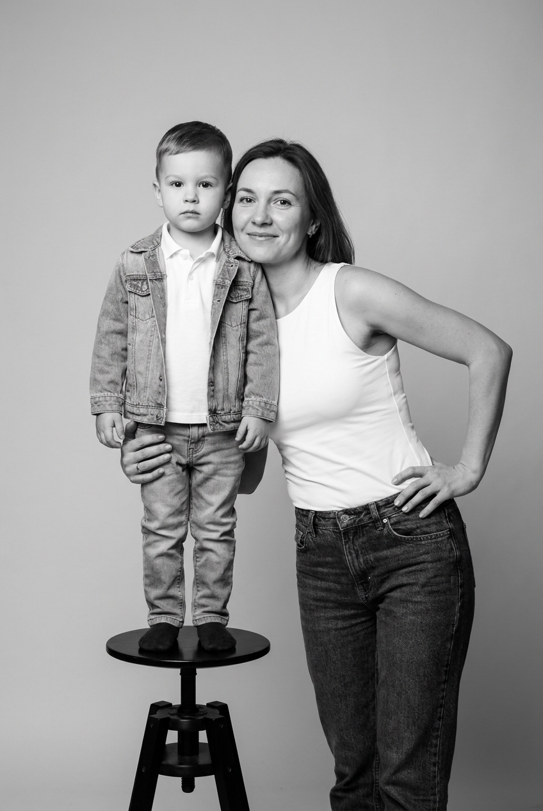
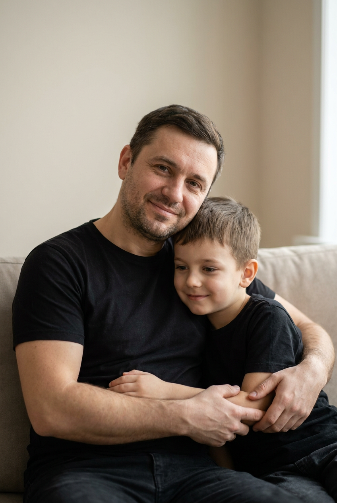
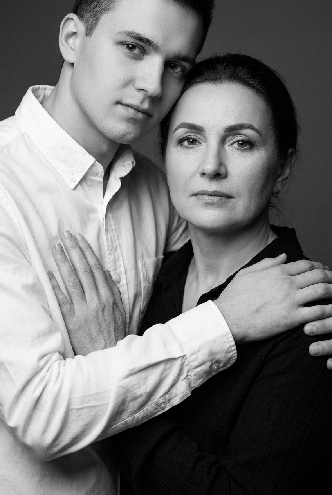
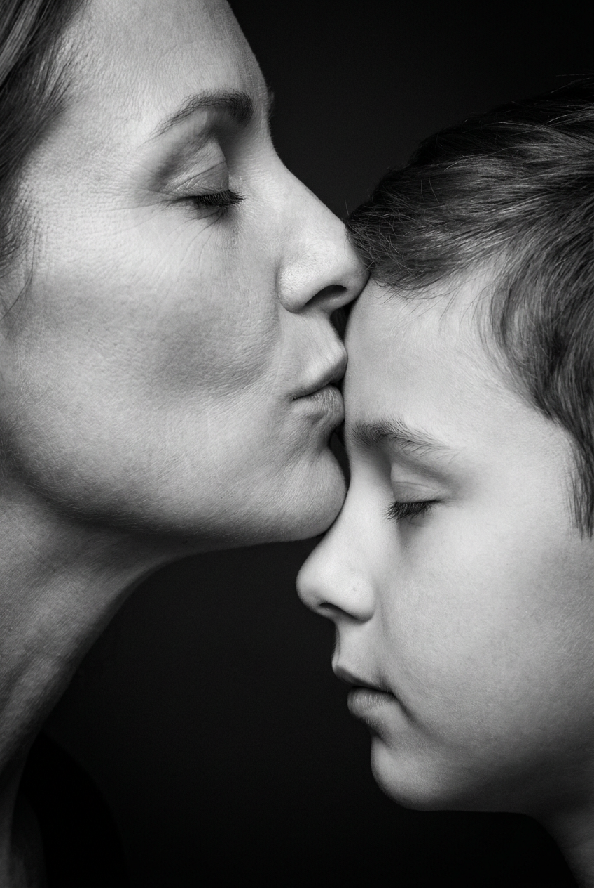
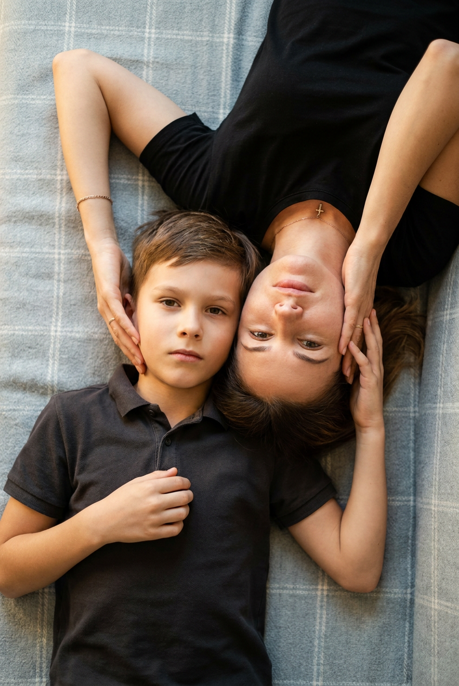
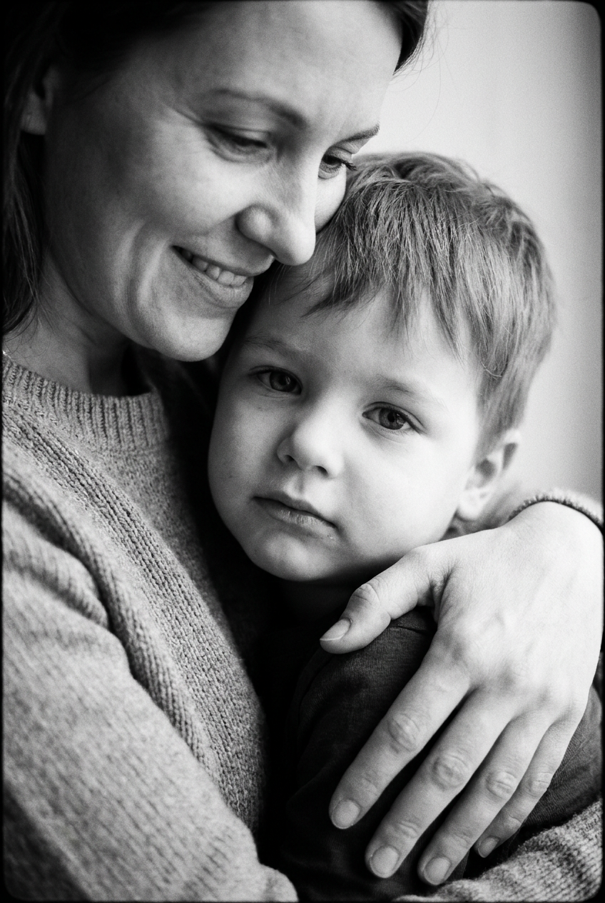
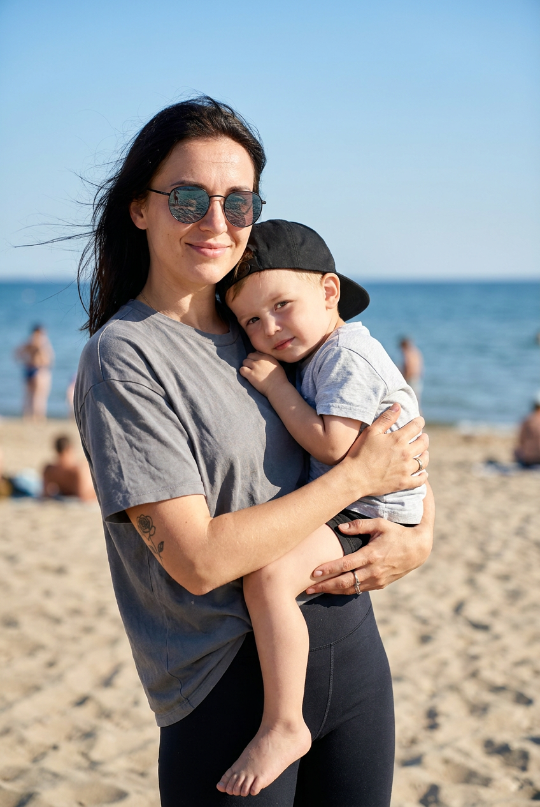
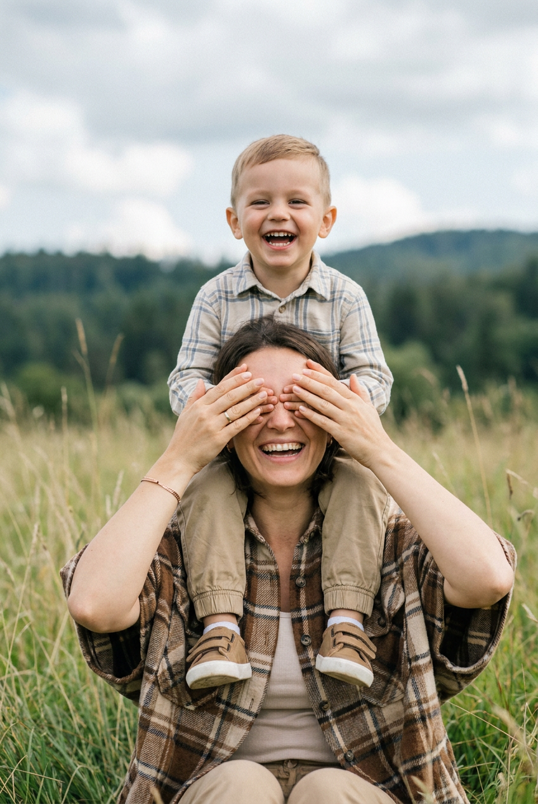
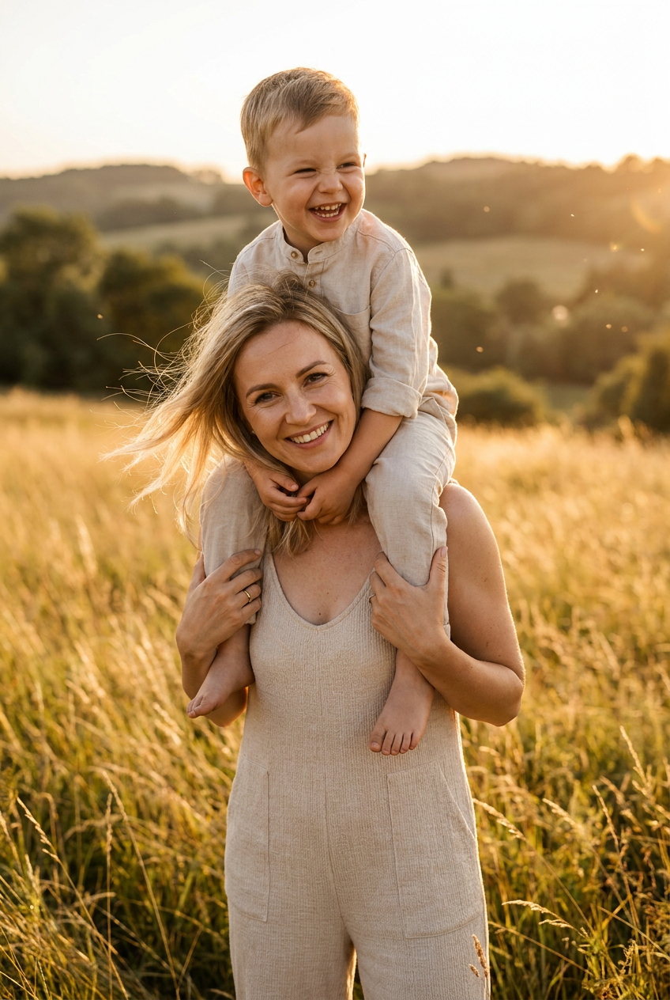
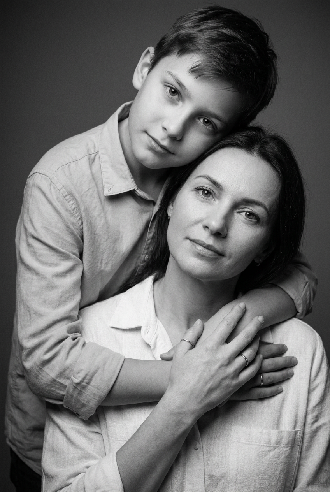

ИИ-фото с сыном: 10 промптов для нейросети

Обычная фотосессия с ребёнком не всегда складывается: сложно поймать нужную эмоцию, свет и естественную позу в одном кадре. Генерация помогает собрать такой снимок из идеи, референса и точного описания сцены.
В подборке — 10 сценариев ИИ-фото с сыном: от чёрно-белой студийной классики и домашнего портрета до кадров у моря, в поле и на закате. Промпты можно использовать как основу и менять одежду, фон или настроение.
Как сгенерировать такое фото: пошагово
Нужен снимок анфас при ровном свете, лицо в кадре целиком, без тёмных очков и головных уборов. Разрешение от 1000 пикселей по короткой стороне. Чем чётче исходник, тем точнее модель повторит черты.
Выберите сценарий ниже и нажмите «Копировать» — текст уйдёт в буфер целиком, вместе с командой сохранения внешности. Эта команда стоит первой строкой и отвечает за то, чтобы на выходе было ваше лицо, а не случайное.
Кнопка «Сгенерировать» рядом с каждым промптом открывает модель в новой вкладке. Nano Banana Pro работает с референсом лица — в отличие от моделей, которые генерируют портрет с нуля и узнаваемость теряют.
Промпт — в поле ввода, портрет — через загрузку референса. Порядок значения не имеет, но без референса команда сохранения внешности работать не будет: модели нечего сохранять.
Для сторис и ленты берите 9:16, для превью и обложек — 4:3. Первый результат редко идеален: если поза или свет ушли не туда, поправьте соответствующую часть промпта и запустите заново. Обычно хватает двух-трёх итераций.
10 промптов для генерации
1. Классический студийный портрет
Строго сохранить внешность по загруженному референсу: черты лица, пропорции, мимику и текстуру кожи без изменений. Вертикальный фотореалистичный чёрно-белый снимок в духе классической семейной студийной фотосессии. В кадре полный рост, по бокам оставить немного воздуха. Фон ровный светло-серый, без предметов и декора. Мама стоит справа, ближе к центру: смотрит прямо в объектив и слегка улыбается. На ней белый топ или майка без рукавов с мягкой посадкой и высокой линией талии, тёмные джинсы с заметной строчкой и натуральными складками. Она чуть наклоняется к сыну, один локоть отведён назад, одна рука лежит на талии или бедре, вторая бережно поддерживает ребёнка за талию или нижнюю часть спины. Сын находится слева на табурете, выглядит спокойно, поза естественная, контакт между ними мягкий и семейный. Реалистичная кожа, точная анатомия, мягкий студийный свет, объектив 50 мм, диафрагма f/5.6, высокая детализация.
2. Тёплые объятия на диване

Строго сохранить внешность по загруженному референсу: черты лица, пропорции, мимику и текстуру кожи без изменений. Фотореалистичный вертикальный семейный портрет дома, кадр от пояса до колен с акцентом на лица и руки. Фон почти однотонный: светлая нейтральная стена без декора. Папа сидит или полулежит на диване, корпус слегка развёрнут к камере, на лице тёплая доброжелательная улыбка. Он одет в чёрную хлопковую футболку с мягкой фактурой и естественными заломами ткани. Сын сидит слева рядом с отцом, прижимается к нему, тоже слегка улыбается; лицо повернуто к папе, взгляд направлен вниз или в сторону, выражение доверительное и спокойное. Одежда сына — чёрная футболка. Одна рука папы обнимает ребёнка за спину или плечо, вторая поддерживает его снизу и частично удерживает детскую руку. Крупный план рук, натуральный домашний свет, объектив 50 мм, f/4, корректные пальцы и анатомия.
3. Объятие за плечами

Строго сохранить внешность по загруженному референсу: черты лица, пропорции, мимику и текстуру кожи без изменений. Вертикальный фотореалистичный чёрно-белый студийный портрет, крупный план до груди и плеч. Мама расположена впереди, немного справа от центра, смотрит в камеру с тихим задумчивым выражением и сомкнутыми губами. На ней тёмная блузка, платье или топ с мягкой фактурой. Макияж профессиональный, но натуральный: подчёркнуты брови и глаза, кожа ровная, с сохранённой живой текстурой, без эффекта пластика. Сын находится позади неё слева и обнимает маму: его руки проходят вокруг плеч и верхней части груди, одна ладонь касается или придерживает плечо либо верхнюю линию декольте. В нижней части кадра видны кисть или пальцы ребёнка. Сохранить правильную перспективу, естественный контакт, пять пальцев на каждой руке, отсутствие деформаций. Мягкий студийный свет, нейтральный фон, объектив 85 мм, f/2.8, тонкая плёночная зернистость.
4. Поцелуй в лоб

Строго сохранить внешность по загруженному референсу: черты лица, пропорции, мимику и текстуру кожи без изменений. Экстремально крупный вертикальный чёрно-белый портрет только лиц матери и сына. Мама слева, её лицо показано в профиль, голова слегка наклонена вправо; глаза закрыты, губы мягко сомкнуты, выражение нежное и умиротворённое. Сын справа также повёрнут в профиль и спокойно принимает поцелуй. Мама целует его в лоб: губы и кожа соприкасаются, расстояние между лицами минимальное, но перспектива остаётся правдоподобной. Точно выстроить носы, подбородки, скулы и линию губ, не допускать слияния черт. Глаза сына закрыты, на лице доверие и спокойствие. Руки не показывать или оставить едва заметными по краям кадра, одежда почти не попадает в композицию. Сохранить естественные поры и мягкие складки кожи, без ретуши под пластик. Мягкий боковой свет, объектив 85 мм, f/2,8, резкость на зоне соприкосновения.
5. Домашний кадр сверху

Строго сохранить внешность по загруженному референсу: черты лица, пропорции, мимику и текстуру кожи без изменений. Фотореалистичный вертикальный семейный портрет, камера почти точно над лицами, угол съёмки примерно 80–90 градусов. Мама и сын лежат на светлом пледе или мягкой диванной ткани с мелкой фактурой и едва заметным клетчатым либо сетчатым рисунком в светло-серых или голубовато-серых оттенках. Вокруг нет посторонних предметов. Свет мягкий, естественный, домашний. У мамы нежное спокойное выражение, расслабленные губы, чёрная футболка, короткорукавный трикотажный верх или матовое чёрное платье. На запястье тонкий браслет или цепочка, небольшой подвес-чарм, например крестик, без логотипов. Сын лежит рядом, лица и руки расположены естественно, между ними ощущается близость. Не менять индивидуальные черты и пропорции лиц, не добавлять лишние пальцы. Объектив 35 мм, f/4, мягкие тени, высокая детализация ткани и кожи.
6. Нежное объятие крупным планом

Строго сохранить внешность по загруженному референсу: черты лица, пропорции, мимику и текстуру кожи без изменений. Вертикальная фотореалистичная чёрно-белая фотография крупным планом: лица и объятие матери с сыном занимают почти весь кадр. Мама лежит или полулежит рядом с ребёнком, одной рукой мягко обнимает его, ладонь и пальцы поддерживают спину или плечо. Сын находится ближе к объективу, лежит, прижавшись к маме, и поворачивает голову к зрителю. Его лицо и глаза должны быть в резком фокусе, выражение спокойное, доверительное. Мама смотрит в его сторону и улыбается, в эмоции читаются любовь и нежность. На ней мягкая домашняя одежда: тонкая футболка, кофта или тёплый свитер без крупных надписей и логотипов. Поза не постановочная, контакт естественный. Использовать мягкий рассеянный свет, натуральную текстуру кожи, объектив 85 мм, f/2,8, умеренный контраст, правильную анатомию рук.
7. Портрет у морского берега

Строго сохранить внешность по загруженному референсу: черты лица, пропорции, мимику и текстуру кожи без изменений. Вертикальная фотореалистичная outdoor-фотография на берегу моря. На заднем плане спокойная вода и ровная линия горизонта, над ней ярко-голубое небо. Фон слегка размыть, но море и фигуры оставить узнаваемыми; лёгкое естественное боке. Мама стоит слева и немного развёрнута к камере, часть волос подхватывает ветер. На ней солнцезащитные очки с тонкой оправой и тёмными линзами, в которых видны реалистичные отражения. Выражение мягкое и спокойное, губы чуть улыбаются. Одежда: свободная серая футболка с коротким рукавом и небольшим объёмом, тёмные спортивные леггинсы или чёрные матовые шорты. На руках заметны аккуратные татуировки, например роза на предплечье, без текста и логотипов. Сын находится рядом, поза тёплая и естественная, лица узнаваемы. Солнечный дневной свет, объектив 50 мм, f/4, выдержка 1/500 с.
8. Игра в высокой траве

Строго сохранить внешность по загруженному референсу: черты лица, пропорции, мимику и текстуру кожи без изменений. Фотореалистичный вертикальный семейный outdoor-кадр в поле с высокой травой, которую слегка шевелит ветер. Вдали видны лесистые холмы, перспектива естественная. Небо облачное, дневной свет мягкий, без резких теней; добавить лёгкую кинематографичную цветокоррекцию и умеренный контраст. Фон размыть, сохранив резкость на лицах и руках. Мама находится на переднем плане в центре или ближе к нижней части кадра, сидит либо полусидит и смеётся во время игры: глаза закрыты или прикрыты, на лице широкая живая улыбка. На ней коричнево-бежевая клетчатая рубашка или пледовая накидка, под ней светлый топ или блуза. На запястье тонкий браслет — жемчужный или металлический, без логотипов. Сын играет рядом, движение выглядит естественным, эмоции тёплые. Объектив 50 мм, f/2.8, мягкое размытие травы, корректная анатомия.
9. Золотой час в поле

Строго сохранить внешность по загруженному референсу: черты лица, пропорции, мимику и текстуру кожи без изменений. Вертикальная фотореалистичная семейная фотография на природе во время golden hour. На фоне — высокая золотистая трава, мягкие холмы и лесополоса вдали. Солнце светит сбоку, оставляя золотые блики на волосах и травинках; в воздухе заметны тонкие пылинки или частицы света. Фон слегка размытый, лица остаются главным акцентом. Мама занимает передний план в нижней части композиции, часть волос развевается ветром. Она тепло улыбается и смотрит в объектив или немного в сторону. На ней светлый бежевый или песочный костюм либо комбинезон из матовой ткани, без текста и логотипов; видны мягкие складки материала. Сын расположен рядом и немного позади, между ними естественная близость, спокойная семейная эмоция. Тёплая кинематографичная цветокоррекция, объектив 85 мм, f/2,8, экспозиция с сохранением деталей в светах.
10. Плёночный портрет в тени

Строго сохранить внешность по загруженному референсу: черты лица, пропорции, мимику и текстуру кожи без изменений. Фотореалистичный вертикальный чёрно-белый студийный close-up в стилистике film noir и классического портрета. Фон почти чёрный или тёмно-серый, полностью однотонный, без декораций. Свет установлен сверху и сбоку: он подчёркивает рельеф лица, оставляет мягкие тени под скулами и подбородком. Допустимы тонкое плёночное зерно и аккуратная виньетка по краям. Мама занимает большую часть переднего плана, смотрит прямо в объектив или чуть мимо него; выражение спокойное и нежное, губы сомкнуты. На ней светлая блузка или рубашка с воротником либо вырезом, хорошо видна фактура мягкой ткани. Сын находится рядом и частично ближе к камере, его лицо читается в объятии, контакт выглядит естественно. Сохранить индивидуальные черты, живую текстуру кожи и правильные руки. Объектив 85 мм, f/2,8, контрастный, но не жёсткий свет, разрешение 4K.
Что важно учесть в этом стиле
Семейный ИИ-портрет держится не только на декорациях. В промпте нужно заранее задать план, положение людей, направление взгляда, тип света и точку контакта. Иначе модель может поменять местами маму и сына, обрезать руки или сделать объятие неестественным.
Для узнаваемости лучше использовать чистый референс без фильтров и сильных теней. Если генератор поддерживает силу влияния изображения, начните со среднего значения: слишком низкое меняет лицо, слишком высокое переносит артефакты исходного снимка. Проверяйте пальцы, глаза, очки и линию соприкосновения лиц.
Идеи для вариаций
- Заменить чёрно-белую обработку на тёплый цвет с мягким зерном.
- Перенести домашний портрет на кухню, в спальню или на балкон с утренним светом.
- Добавить сыну свитер, джинсовую куртку или одинаковые футболки с мамой.
- Сделать морской кадр на рассвете, в пасмурную погоду или после дождя.
- Попросить крупный план рук, где мама держит ладонь сына.
- Добавить реквизит без надписей: плед, деревянную скамью, букет сухих трав.
Как собрать свой промпт
Сначала укажите формат и композицию: вертикальный кадр, крупный план, полный рост или съёмка сверху. Затем опишите место, фон и свет. После этого разложите сцену по персонажам: кто где стоит, куда смотрит, во что одет и как касается другого человека.
В финале добавьте технические параметры: объектив 50 или 85 мм, диафрагму f/2.8–f/5.6, глубину резкости, характер цветокоррекции и нужное разрешение. Для семейных фото полезно отдельно прописать «корректная анатомия рук, пять пальцев, без лишних конечностей и искажений лица».
Ошибки, из-за которых кадр не получается
- Слишком много деталей. Модель теряет главное, если в одном запросе смешаны разные локации, позы и источники света.
- Неясная расстановка. Слова «рядом» недостаточно: укажите, кто слева, кто справа, кто ближе к камере.
- Отсутствие ограничений. Добавьте запрет на логотипы, текст, лишние пальцы, пластиковую кожу и деформированные лица.
- Неподходящий план. Полный рост не сочетается с описанием, рассчитанным на портрет до плеч.
- Слишком сильное влияние референса. Так появляются случайные тени, фоновые предметы и артефакты исходного изображения.
Частые вопросы
Как сделать такое ИИ-фото бесплатно?
Попробуйте Kandinsky и Шедеврум: они подходят для текстовой генерации, но точное сохранение лица и работа с референсом могут быть ограничены. Krea AI и Arena.ai удобны для экспериментов и сравнения вариантов, однако доступность функций, число попыток и качество загрузки референса меняются. Для узнаваемого семейного портрета обычно требуется несколько генераций и ручной отбор.
Какой референс лучше загрузить?
Берите резкий снимок лица без солнцезащитных очков, сильного макияжа и перекрывающих лицо волос. Желательно, чтобы человек смотрел в камеру, а освещение было равномерным. Для мамы и сына подготовьте отдельные референсы, если сервис умеет работать с несколькими изображениями.
Почему нейросеть искажает руки в объятиях?
Сложные перекрытия кистей и пальцев часто воспринимаются моделью как одна форма. Опишите, какая рука находится сверху, где лежит ладонь и сколько пальцев должно быть видно. После генерации увеличьте проблемную область и используйте дорисовку или повторный рендер.
Как добиться максимального сходства с сыном?
Не перегружайте запрос описанием внешности, если лицо уже задано референсом. Укажите, что нужно сохранить форму глаз, носа, губ, овал лица, пропорции и естественную мимику, а затем проверьте результат при одинаковом освещении. Иногда лучше сделать 5–10 вариантов с умеренной силой референса, чем один раз выставить максимальное значение.